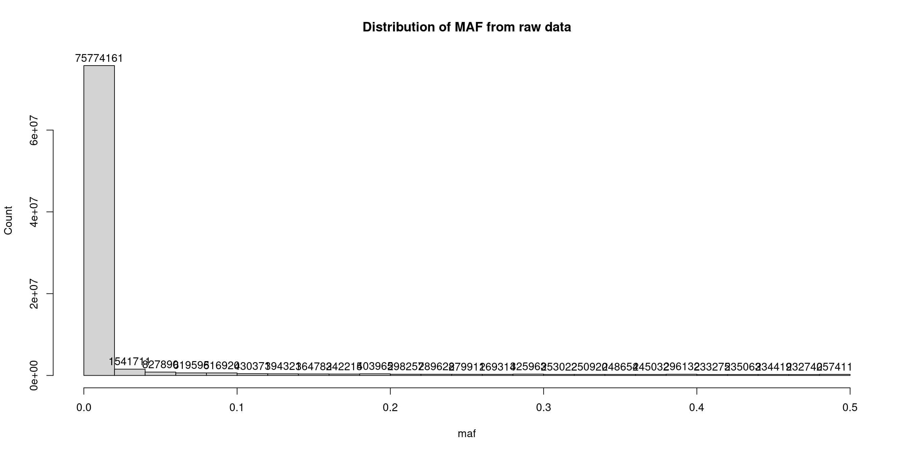
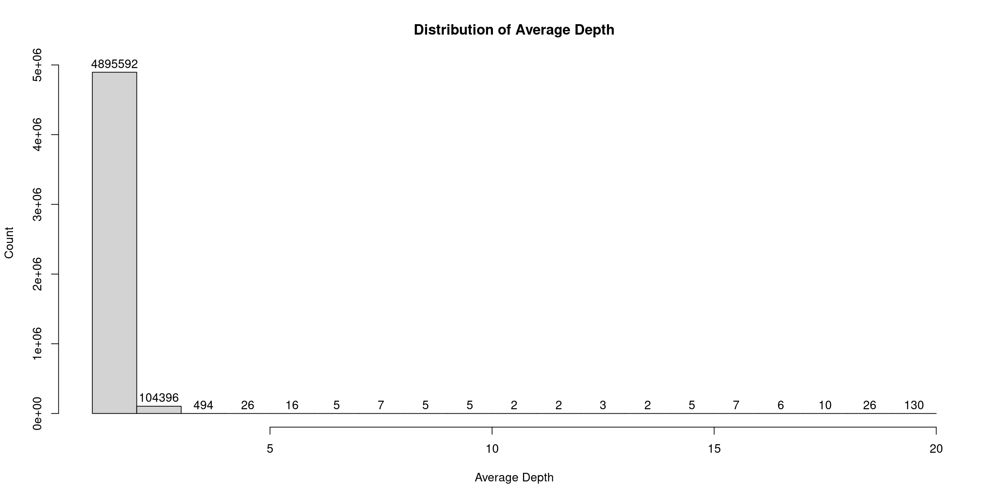
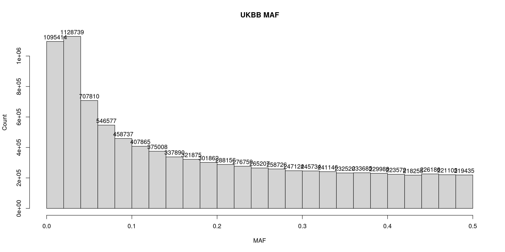
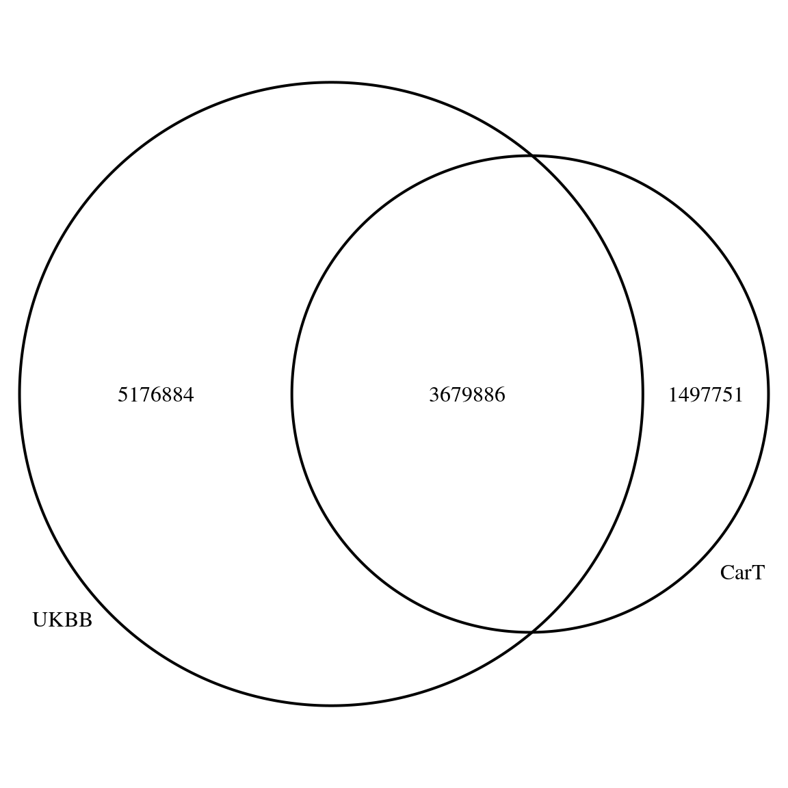
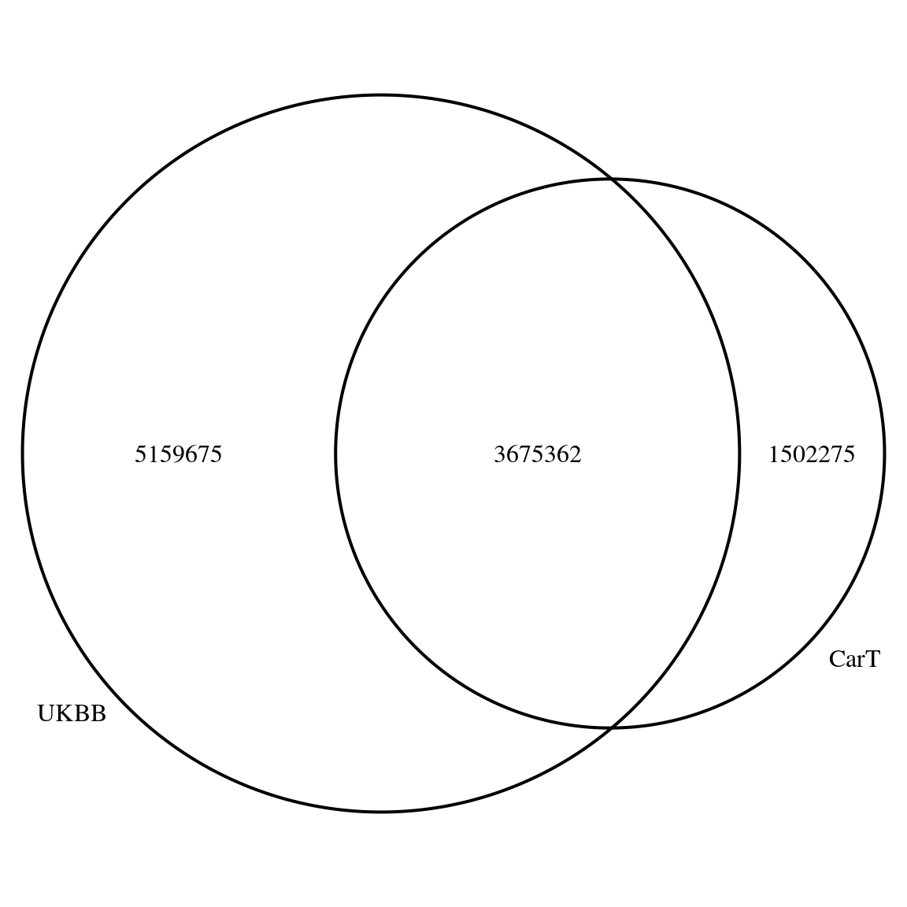

Data
XSun
2024-06-03
Last updated: 2024-06-04
Checks: 6 1
Knit directory: CarT/
This reproducible R Markdown analysis was created with workflowr (version 1.7.0). The Checks tab describes the reproducibility checks that were applied when the results were created. The Past versions tab lists the development history.
The R Markdown file has unstaged changes. To know which version of
the R Markdown file created these results, you’ll want to first commit
it to the Git repo. If you’re still working on the analysis, you can
ignore this warning. When you’re finished, you can run
wflow_publish to commit the R Markdown file and build the
HTML.
Great job! The global environment was empty. Objects defined in the global environment can affect the analysis in your R Markdown file in unknown ways. For reproduciblity it’s best to always run the code in an empty environment.
The command set.seed(20240603) was run prior to running
the code in the R Markdown file. Setting a seed ensures that any results
that rely on randomness, e.g. subsampling or permutations, are
reproducible.
Great job! Recording the operating system, R version, and package versions is critical for reproducibility.
Nice! There were no cached chunks for this analysis, so you can be confident that you successfully produced the results during this run.
Great job! Using relative paths to the files within your workflowr project makes it easier to run your code on other machines.
Great! You are using Git for version control. Tracking code development and connecting the code version to the results is critical for reproducibility.
The results in this page were generated with repository version 0a35aaa. See the Past versions tab to see a history of the changes made to the R Markdown and HTML files.
Note that you need to be careful to ensure that all relevant files for
the analysis have been committed to Git prior to generating the results
(you can use wflow_publish or
wflow_git_commit). workflowr only checks the R Markdown
file, but you know if there are other scripts or data files that it
depends on. Below is the status of the Git repository when the results
were generated:
Unstaged changes:
Modified: analysis/data.Rmd
Note that any generated files, e.g. HTML, png, CSS, etc., are not included in this status report because it is ok for generated content to have uncommitted changes.
These are the previous versions of the repository in which changes were
made to the R Markdown (analysis/data.Rmd) and HTML
(docs/data.html) files. If you’ve configured a remote Git
repository (see ?wflow_git_remote), click on the hyperlinks
in the table below to view the files as they were in that past version.
| File | Version | Author | Date | Message |
|---|---|---|---|---|
| Rmd | 0a35aaa | XSun | 2024-06-03 | update |
| html | 0a35aaa | XSun | 2024-06-03 | update |
| Rmd | bdd8887 | XSun | 2024-06-03 | update |
| html | bdd8887 | XSun | 2024-06-03 | update |
library(VennDiagram)Loading required package: gridLoading required package: futile.logger# Define the function to create a Venn diagram
create_venn_diagram <- function(set_A, set_B, overlap_AB, category_A = "Set A", category_B = "Set B") {
# Create the Venn diagram
venn.plot <- draw.pairwise.venn(
area1 = set_A,
area2 = set_B,
cross.area = overlap_AB,
category = c(category_A, category_B),
fill = c("blue", "red"),
alpha = 1,
label.col = "white",
cex = 1,
cat.cex = 1,
cat.col = c("blue", "red")
)
# Plot the Venn diagram
grid.draw(venn.plot)
}Genotype data
The data is storaged at
/project2/xinhe/xsun/cart/data
STATs for the raw data, obtained by
bcftools stats CART_MERGED.vcf.gz > stats.txt
| stats | |
|---|---|
| #of samples | 105 |
| #of variants | 85,265,672 |
| #of SNPs | 81,712,001 |
| #of MNPs | 249 |
| #of indels | 3,489,092 |
| #of others | 64,330 |
What the origin VCF has done
File Generation and Format: The file adheres to the VCF (Variant Call Format) version 4.2
Source and Generation: The VCF file was generated by “Gencove SaaS v2.0.0” on the date “20/09/2023.”
Reference and Imputation Panel: The sequences have been aligned to the human genome build b37_g1k v1_0_0, and an imputation panel human/b37_g1k_full_plusYMT v1_0_0 has been used. This suggests that imputation methods were applied to estimate missing genotypes.
File Content and Metadata: The header includes definitions for various metadata like sample IDs (gencovesampleid), reference allele frequencies (RAF), alternate allele frequencies (AF), and genotype qualities (GP, DS, GT). The presence of INFO and FORMAT tags suggests structured annotations related to genotypes and variant information for the genomic samples.
Merging Process: The use of bcftools_mergeCommand in the header indicates that multiple VCF files were merged into this one. The command provides a list of all the files that were merged and the specific parameters (merge -O v) used with bcftools, a tool for manipulating VCF files.
Quality Filters: Quality filters such as PASS and LOWCONF are applied, indicating that variants are filtered based on certain quality metrics. The LOWCONF filter, for example, is applied to variants where no genotype has a posterior probability (GP) greater than 0.9 (MAX(FORMAT/GP)>0.9).
Further QC
- Variant quality control:
Removing the variants annotated as ‘LOWCONF’
Removing the variants with MAF < 0.01
bcftools view -i 'INFO/AF >= 0.01' -f PASS -O z -o lowconf_maf_filtered.vcf.gz CART_MERGED.vcf.gz
| stats | |
|---|---|
| #of samples | 105 |
| #of variants | 1,806,562 |
| #of SNPs | 1,662,663 |
| #of MNPs | 2 |
| #of indels | 143,356 |
| #of others | 541 |
Depth coverage:
data <- data.table::fread("/project2/xinhe/xsun/cart/data/mediate_files/summary_depths.txt", header = FALSE, col.names = c("Chrom", "Pos", "RSID", "Ref", "Alt", "MinDepth", "MaxDepth", "AvgDepth", "Count"))
summary(data$AvgDepth) # Provides a statistical summary of average depths Min. 1st Qu. Median Mean 3rd Qu. Max.
1.000 1.407 1.500 1.525 1.608 20.000 hist(data$AvgDepth, breaks = 50, main = "Distribution of Average Depth", xlab = "Average Depth") # Histogram of average depth
| Version | Author | Date |
|---|---|---|
| bdd8887 | XSun | 2024-06-03 |
MAF distribution after QC
data <- data.table::fread("/project2/xinhe/xsun/cart/data/variant_ids_and_maf.txt", header = FALSE, col.names = c("snp","maf"))
hist(data$maf, breaks = 50, main = "Distribution of MAF", xlab = "MAF") 
- Sample quality control:
- Computing missing genotype rates for each sample
vcftools --gzvcf lowconf_maf_filtered.vcf.gz --missing-indv --out missingness
The max missing rate is 0.0417921%, so all samples were kept.
Comparing with UKBB data
MAF > 0.01
load("/project2/xinhe/xsun/cart/data/process/overlap_ukbb001.rdata")
create_venn_diagram(set_A = numukbb001, set_B = numcart001, overlap_AB = nrow(merged_var001), category_A = "UKBB", category_B = "CarT data")
MAF > 0.05
load("/project2/xinhe/xsun/cart/data/process/overlap_ukbb005.rdata")
create_venn_diagram(set_A = numukbb005, set_B = numcart005, overlap_AB = nrow(merged_var005), category_A = "UKBB", category_B = "CarT data")
MAF > 0.1
load("/project2/xinhe/xsun/cart/data/process/overlap_ukbb01.rdata")
create_venn_diagram(set_A = numukbb01, set_B = numcart01, overlap_AB = nrow(merged_var01), category_A = "UKBB", category_B = "CarT data")
MAF > 0.02
load("/project2/xinhe/xsun/cart/data/process/overlap_ukbb02.rdata")
create_venn_diagram(set_A = numukbb02, set_B = numcart02, overlap_AB = nrow(merged_var02), category_A = "UKBB", category_B = "CarT data")
sessionInfo()R version 4.2.0 (2022-04-22)
Platform: x86_64-pc-linux-gnu (64-bit)
Running under: CentOS Linux 7 (Core)
Matrix products: default
BLAS/LAPACK: /software/openblas-0.3.13-el7-x86_64/lib/libopenblas_haswellp-r0.3.13.so
locale:
[1] C
attached base packages:
[1] grid stats graphics grDevices utils datasets methods
[8] base
other attached packages:
[1] VennDiagram_1.7.3 futile.logger_1.4.3
loaded via a namespace (and not attached):
[1] Rcpp_1.0.8.3 highr_0.9 formatR_1.12
[4] pillar_1.9.0 compiler_4.2.0 bslib_0.3.1
[7] later_1.3.0 jquerylib_0.1.4 git2r_0.30.1
[10] workflowr_1.7.0 futile.options_1.0.1 tools_4.2.0
[13] digest_0.6.29 jsonlite_1.8.0 evaluate_0.15
[16] lifecycle_1.0.4 tibble_3.2.1 pkgconfig_2.0.3
[19] rlang_1.1.2 cli_3.6.1 rstudioapi_0.13
[22] yaml_2.3.5 xfun_0.41 fastmap_1.1.0
[25] stringr_1.5.1 knitr_1.39 fs_1.5.2
[28] vctrs_0.6.5 sass_0.4.1 rprojroot_2.0.3
[31] data.table_1.14.2 glue_1.6.2 R6_2.5.1
[34] fansi_1.0.3 rmarkdown_2.25 lambda.r_1.2.4
[37] magrittr_2.0.3 whisker_0.4 promises_1.2.0.1
[40] htmltools_0.5.2 httpuv_1.6.5 utf8_1.2.2
[43] stringi_1.7.6